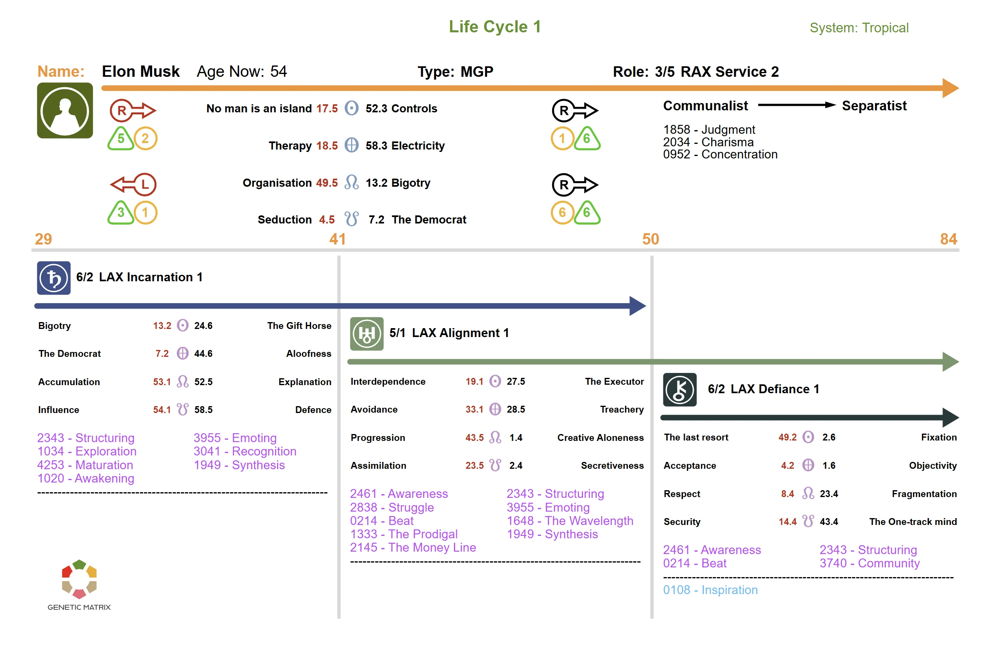

Understand the major planetary return cycles that mark key phases of growth, maturation, and transformation throughout life.
In Human Design, life unfolds through a series of major planetary cycles, including returns, oppositions, and other key developmental turning points. These are not abstract metaphors. They are measurable astronomical events based on the movement of planets in relation to their positions at the point of birth. Each one marks a shift in theme, development, and life focus.
The most significant cycles are the Saturn Return, the Uranus Opposition, and the Chiron Return. Together, these mark major phases of maturation and transformation across the life process.
Around Age 29–30
The Saturn Return is the first major life cycle. Saturn takes approximately 29.5 years to orbit the Sun and return to its position at birth. This cycle marks the transition from youth into adulthood. It often brings pressure around responsibility, structure, and consequence. In Human Design, it signals the beginning of a more mature phase of life. For those with a 6th-line profile, it also marks the movement into the second phase of life, often described as the roof or objective phase.
Around Age 58–59
The second Saturn Return occurs roughly 29 years after the first, around ages 58–59. This cycle revisits the themes of responsibility, maturity, and accountability introduced during the first return. It often brings reflection on what has been built and what remains essential.
Around Ages 38–42
The Uranus Opposition occurs when transiting Uranus reaches the point directly opposite its position at birth. This usually takes place from the late thirties into the early forties and is often associated with midlife change. In Human Design, it marks the transition from the South Node life theme to the North Node life theme. It is a major reorientation in the life process and often brings disruption, realignment, and a shift in direction.
Around Age 50
The Chiron Return occurs when Chiron returns to its position at birth, approximately 50 years after birth. In Human Design, this is especially important for those with 6th-line profiles, as it marks the beginning of the Role Model phase. It is also significant for all 9-centered humans, because we all move through a three-stage life maturation process. The Chiron Return signals a deeper maturation of awareness and expression as the third phase of life begins.
Every 12 Years
Jupiter returns to its position at birth approximately every 12 years. These returns often mark periods of growth, expansion, and renewed alignment with your personal law. The Jupiter Returns at ages 12, 24, 36, 48, and 60 each bring a subtle shift in direction and emphasis.
Every Year (Your Birthday)
The Solar Return occurs each year when the Sun returns to the exact position it occupied at your birth. In Human Design, the Solar Return chart reveals the themes of the year ahead and highlights which activations are bringing new direction, new connections, new lessons, and new developments.
Every 28.5 Days
The Lunar Return occurs when the Moon returns to its position at birth, approximately every 28.5 days. This creates a regular rhythm of emotional and motivational recalibration and can reflect short-term shifts in emphasis across the month.
Note
Life cycles are not events to fear. They are natural developmental markers built into the mechanics of being human. Understanding them can provide context for the pressures and changes you experience at different stages of life.

Example of a personalized Human Design life cycle chart. Click to enlarge.
The Saturn Return occurs around age 29–30 when Saturn completes its first full orbit and returns to its position at birth. In Human Design, it marks the transition from youth into adulthood and often brings pressure around responsibility, structure, and maturity.
The Uranus Opposition occurs around ages 38–42 and marks a major midlife turning point. In Human Design, it is associated with the shift from the South Node life theme to the North Node life theme. This period often brings disruption, reevaluation, and a significant realignment of direction.
The Chiron Return occurs around age 50 when Chiron returns to its position at birth. It is especially important for those with 6th-line profiles, as it marks the beginning of the Role Model phase. More broadly, it signals the beginning of the third phase of life and a deeper maturation of awareness and expression.
Jupiter returns to its position at birth approximately every 12 years. Key Jupiter Returns occur around ages 12, 24, 36, 48, and 60, often bringing periods of growth, expansion, and renewed alignment with personal law.
Yes. Genetic Matrix provides tools to view your life cycles, planetary returns, and major transit thresholds. You can track when key cycles are approaching and explore how they relate to your design.
Upgrade to Advanced or Pro to run your life cycles, with Pro offering a more interactive way to explore the major developmental phases shaping your life.
Get Advanced or Pro →